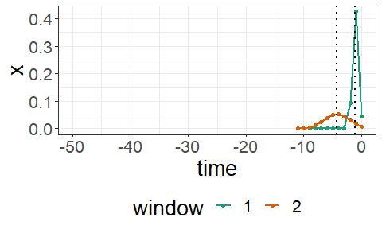
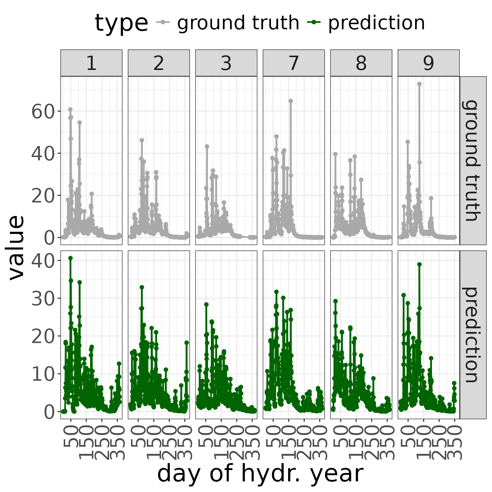

Sample experiment using Sliding Window Regression
Stefan Schrunner
2023-05-01
sampleExperiment.RmdIntroduction
SlidingWindowReg implements a regression model for hydrological time series data. In particular, multiple time-lagged windows with Gaussian kernel shape are estimated from training data. Then, each extracted feature is mapped to a target time series via multiple linear regression.
In this vignette, a sample experiment is performed to demonstrate that the model is able to identify model parameters correctly in a user-simulated setup.
Data preparation & experimental setup
First, we load the package and the sample watershed data:
library(SlidingWindowReg)
data("sampleWatershed")As a second step, we divide the dataset into (a) a train set containing 30 years (77% of the time series) and (b) a test set comprising the residual 9 years (23% of the time series). Note that in the present dataset, years refer to hydrological years (October 01 to September 30).
##
## Attaching package: 'lubridate'## The following objects are masked from 'package:base':
##
## date, intersect, setdiff, unionSlidingWindowReg model
Given the data splits, we train the SlidingWindowReg model on the train set. For this purpose, the following parameters are set:
- iter number of iterations (maximum number of windows)
- runs number of independent model runs — by default, the run achieving the best performance metric is returned
- param_selection method to determine the number of windows
Model training
In the presented example, we use 3 iterations (up to 3 windows), and determine the hyperparameter (number of windows \(k\)) with respect to the Bayesian Information Criterion (BIC).% Further, we set the parallelization procedure to FALSE.
mod <- trainSWR(sampleWatershed$rain[train_inds],
sampleWatershed$gauge[train_inds],
iter = 3,
param_selection = "best_bic")## Warning: The `runs` argument of `trainSWR()` is deprecated as of SlidingWindowReg 0.1.1.
## ℹ Multiple model runs are not useful with deterministic window initializations.
## This warning is displayed once every 8 hours.
## Call `lifecycle::last_lifecycle_warnings()` to see where this warning was
## generated.## Warning: The `parallel` argument of `trainSWR()` is deprecated as of SlidingWindowReg
## 0.1.1.
## ℹ Parallel model runs are not useful with deterministic window initializations.
## This warning is displayed once every 8 hours.
## Call `lifecycle::last_lifecycle_warnings()` to see where this warning was
## generated.%## Parallelization
%Model parallelization is implemented between the model runs, while iterations (incrementally adding windows in each iterations) run in a %serial order. Hence, the option parallel = FALSE should be chosen if runs = 1. In case of multiple model runs, %parallel can be set to either TRUE (in this case, the number of available kernels is determined automatically), or to a %positive integer number indicating the number of kernels to be used.
Evaluation
Tools for evaluating the model results include summary and plot functions for the model parameters, as well as metrics and plots to determine the predictive performance on test sets.
Model parameters
A first overview on the model results can be obtained by printing a model summary:
summary(mod)## SlidingWindowReg (SWR) model object with k = 3 windows
##
## | window| delta| sigma| beta|
## |------:|-----:|-----:|----:|
## | 1| 1.32| 0.15| 0.43|
## | 2| 1.91| 2.71| 0.35|
## | 3| 11.19| 3.20| 0.10|In specific, the main model parameters are stored as:
- a matrix characterizing the location and size of the windows (column 1 indicates all center points on the time axis, column 2 indicates the variance)
- a vector of regression coefficients
# window parameters
print(mod$param)## delta sigma
## [1,] 1.323001 0.148855
## [2,] 1.913136 2.705538
## [3,] 11.186630 3.197777
# regression parameters
print(mod$mix)## [1] 0.4264552 0.3469121 0.1039012In order to visualize the estimated windows, a kernel plot is available in SlidingWindowReg:
coef(mod)##
## kernel1 0.0000000000 0.0000000000 0.0000000000 0.000000000 0.000000000
## kernel2 0.0000000000 0.0000000000 0.0000000000 0.000000000 0.000000000
## kernel3 0.0001210185 0.0002986937 0.0006690562 0.001360078 0.002509179
##
## kernel1 0.000000000 0.000000000 0.000000000 0.00000000 0.00000000 0.0000000000
## kernel2 0.000000000 0.000000000 0.000000000 0.00000000 0.00000000 0.0002365553
## kernel3 0.004201155 0.006383756 0.008803511 0.01101815 0.01251513 0.0129013800
##
## kernel1 0.0000000000 0.000000000 0.000000000 0.000000000 0.000000000
## kernel2 0.0007546554 0.002103138 0.005120336 0.010890524 0.020236022
## kernel3 0.0120701170 0.010248516 0.007897399 0.005523062 0.003505479
## -3 -2 -1
## kernel1 0.000000000 0.000000000 5.621187e-16 0.0499830593 3.764722e-01
## kernel2 0.032849832 0.046588333 5.772453e-02 0.0624862928 5.909504e-02
## kernel3 0.002019226 0.001055578 5.007977e-04 0.0002156243 8.425472e-05
## 0
## kernel1 6.872017e-09
## kernel2 4.882684e-02
## kernel3 0.000000e+00
plot(mod, include_text = FALSE)
Predictive performance
To assess its predictive performance, we evaluate the model on the test set. For this purpose, we compute the root mean squared error (RMSE) and further evaluation metrics:
pred_on_test <- predict(mod,
newdata = sampleWatershed$rain[-train_inds])
print(eval_all(pred_on_test,
sampleWatershed$gauge[-train_inds]))## rmse nrmse r2 nse kge
## 1 3.353339 0.8898754 0.7244507 0.7244507 0.7457704As a next step, we generate a plot demonstrating
- the input time series,
- the predicted output time series, and
- the ground truth output.
The plot demonstrates the first 3 and last 3 hydrological years (in this case, years 1-3 and 7-9 are displayed).
plot(mod,
type = "prediction",
reference = sampleWatershed$gauge[-train_inds],
newdata = sampleWatershed$rain[-train_inds])